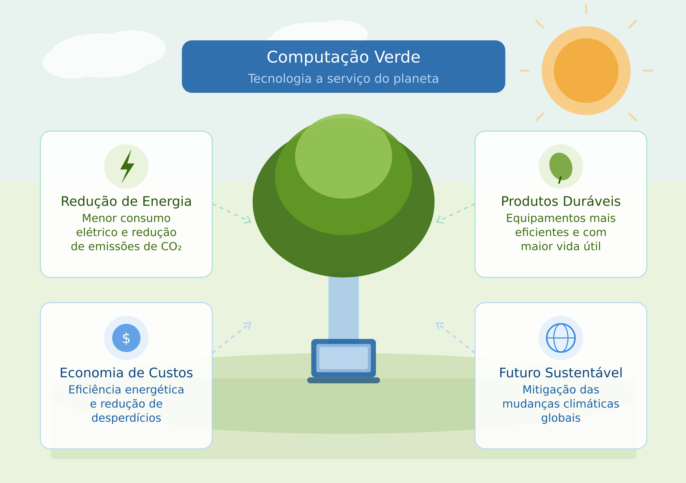

Empresa Genérica de Computação Verde
Computação Verde
A computação verde é uma abordagem que visa reduzir o impacto ambiental da tecnologia da informação.
Ela envolve práticas e tecnologias que minimizam o consumo de energia, reduzem a emissão de gases de efeito estufa e promovem a sustentabilidade.
A computação verde inclui o uso de hardware eficiente, data centers sustentáveis, software otimizado e a promoção de práticas de reciclagem e reutilização de equipamentos eletrônicos.
O objetivo é criar um ambiente tecnológico mais sustentável e responsável, contribuindo para a preservação do meio ambiente.

Benefícios da Computação Verde

A computação verde oferece uma série de benefícios, tanto para o meio ambiente quanto para as empresas e os consumidores.
Entre os principais benefícios estão a redução do consumo de energia, o que leva a uma diminuição das emissões de gases de efeito estufa e, consequentemente, à mitigação das mudanças climáticas.
Além disso, a computação verde pode resultar em economia de custos para as empresas, devido à eficiência energética e à redução de desperdícios.
Para os consumidores, a computação verde pode proporcionar produtos mais duráveis e eficientes, além de contribuir para um futuro mais sustentável.
Porque fazer computação verde?
A adoção da computação verde é crucial para enfrentar os desafios ambientais atuais.
Com o aumento do uso de tecnologia em nossas vidas diárias, é essencial que busquemos maneiras de minimizar o impacto ambiental associado a essa tecnologia.
A computação verde nos permite reduzir nossa pegada de carbono, conservar recursos naturais e promover a sustentabilidade.
Além disso, ao adotar práticas de computação verde, as empresas podem melhorar sua reputação e atrair consumidores conscientes do meio ambiente, enquanto os indivíduos podem contribuir para um futuro mais sustentável.
Adotar a computação verde é uma resposta necessária aos desafios ambientais e econômicos do nosso tempo.
À medida que a infraestrutura digital cresce de forma acelerada, o consumo de energia pelos sistemas computacionais representa uma parcela cada vez maior das emissões globais de carbono, tornando urgente uma mudança de postura por parte de empresas e consumidores.
Além do impacto ambiental, a eficiência energética proporcionada pelas práticas sustentáveis gera redução direta nos custos operacionais, tornando a computação verde também uma decisão inteligente do ponto de vista financeiro.
Há ainda uma dimensão social importante: ao optar por tecnologias mais eficientes, com menor geração de lixo eletrônico e maior vida útil dos equipamentos, contribuímos para um modelo de desenvolvimento mais justo e responsável.
Em suma, fazer computação verde não é apenas uma tendência, mas uma necessidade estratégica para quem deseja prosperar em um mundo que exige cada vez mais responsabilidade ambiental.